这是一份可以直接照着抄作业的 Waffo（Waffo Pancake）跨境支付打通与 12 步 KYB 店铺审核保姆级实操手册。涵盖从 Cloudflare 免费配置 support@域名 客服邮箱转发、OpenAI 上传图片安全审核、Waffo 沙盒测试卡跑通首笔订单、多网站「一网一店」防关联配置，一直到 Waffo 12 步商业信息（KYB）填写话术模板与网站自检秒过技巧。
全流程 6 大阶段总览： ① 在 Cloudflare 开启 Email Routing 将 support@你的域名 转发至个人 Gmail；② 配置 OpenAI 内容审核密钥与 /terms-of-service 六类 AIGC 禁令条款；③ 登录 Waffo Pancake 商户后台（https://pancake.waffo.ai/，注意不要输错成无法访问的 dashboard.waffo.ai），一键同步 Waffo 沙盒商品（含积分包与订阅套餐）并用官方测试卡完成首笔支付与站内积分入账验证；④ 遵循「一个商户账号、每个网站新建一个独立店铺（Store）」原则配置英文品牌名、Logo、客服邮箱与域名验证；⑤ 逐项填完 12 步 KYB 商业信息并通过 Beta 网站自检；⑥ 绑定国内人民币银行卡提款账户（同商户账号只需绑定一次，后续新店自动继承），等待审核通过后切入生产环境。
1. 第一阶段：Cloudflare 开启 Email Routing（免费配置 support@域名 客服邮箱）
Waffo 店铺审核强制要求提供与网站同域名的客服邮箱（如 support@hittheroaddudeai.fun）并接收验证码。利用 Cloudflare 自带的 Email Routing（电子邮件路由），零成本即可把发往 support@你的域名 的邮件自动转发到个人 Gmail。
1.1 进入 Email Routing 并点击 Onboard Domain
登录 Cloudflare 控制台，点击左侧菜单 域（Domains） → 电子邮件路由（Email Routing），在列表右侧点击蓝色的 + Onboard Domain 按钮。
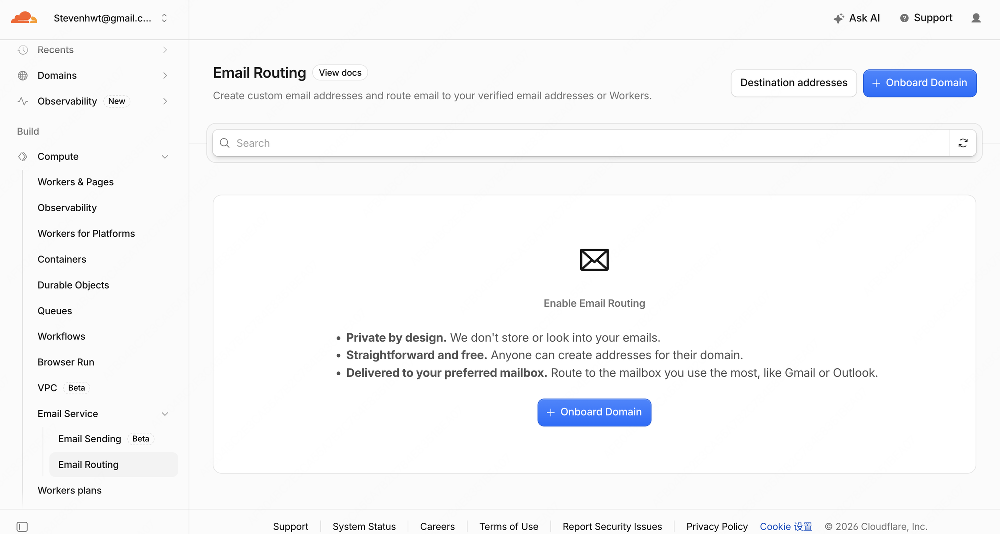
图注：在 Cloudflare「电子邮件路由」页点击右上角 + Onboard Domain 开始接入域名。
1.2 选择当前站点域名并自动激活 MX SPF 记录
在下拉框选中要开通客服邮箱的域名（如 hittheroaddudeai.fun），点击 Continue；随后 Cloudflare 会自动列出需要写入的 3 条 MX 记录与 1 条 TXT（SPF）记录，直接点击蓝色的 Activate 一键写入 DNS。
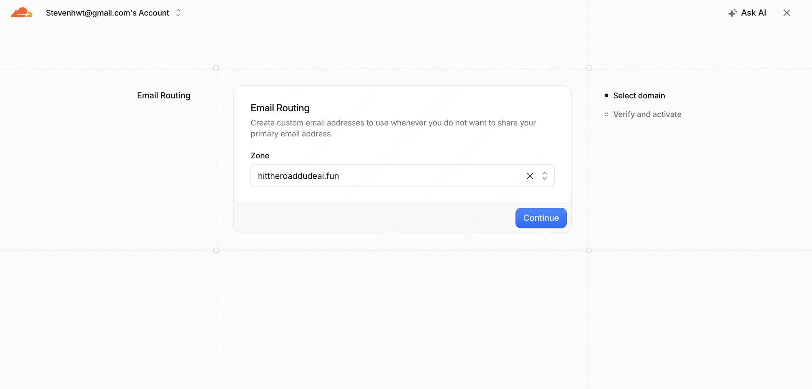
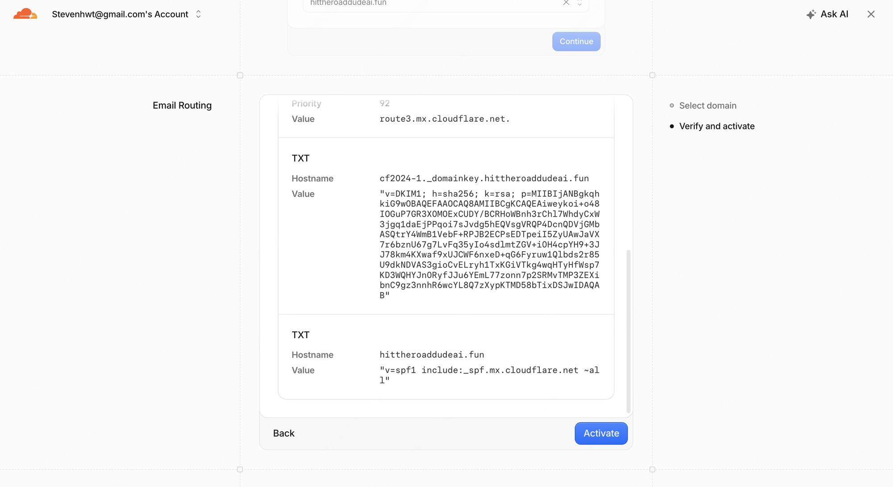
图注：选定域名点 Continue 后，直接点蓝色的 Activate 自动添加 MX 与 TXT 邮件解析记录。
1.3 先添加并验证目标转发邮箱（Destination Address）
激活 DNS 后进入 Routing rules 页面。注意避坑： 如果直接点 + Create routing rule，在弹窗的 Destination Address 下拉框里会发现是空的（因为还没绑定接收转发的个人 Gmail）。
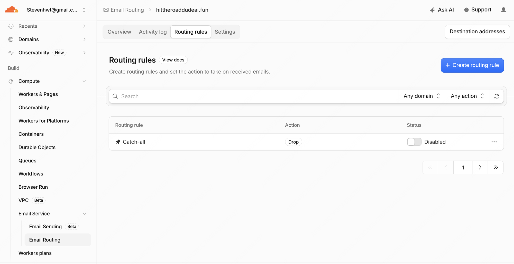
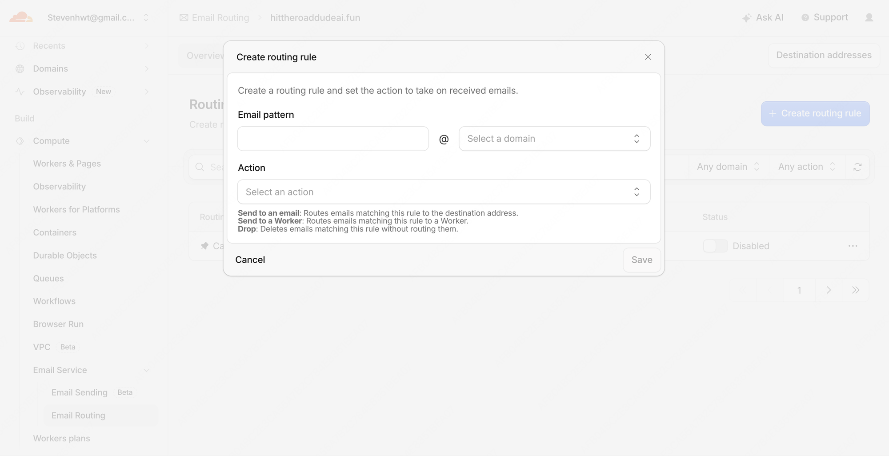
正确顺序是先切到顶部的 目标地址（Destination addresses） 标签页（或在弹窗里点添加新目标地址），输入你的个人邮箱 stevenhwt@gmail.com 并点击 Add address。随后打开你的 Gmail 收件箱，找到来自 Cloudflare 的验证邮件点击确认链接，直到状态变成绿色的 Verified。
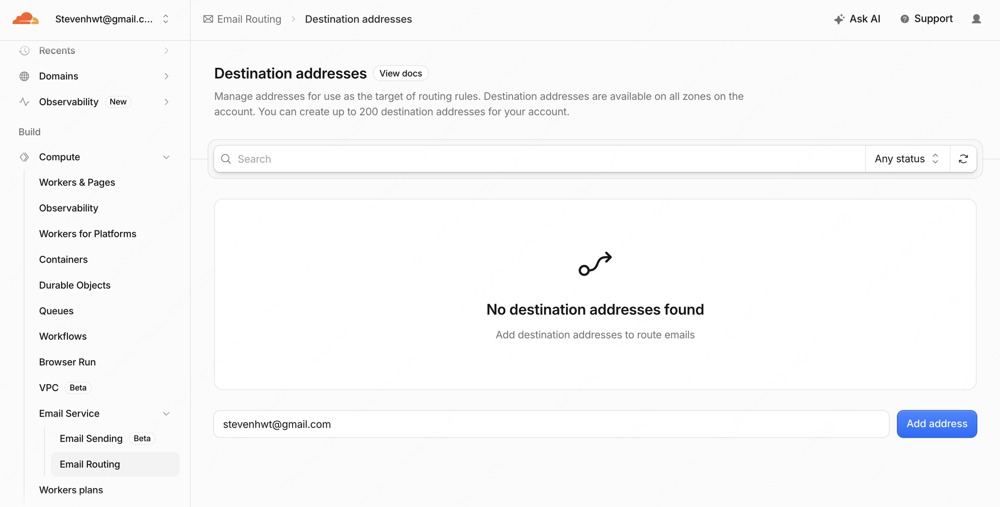
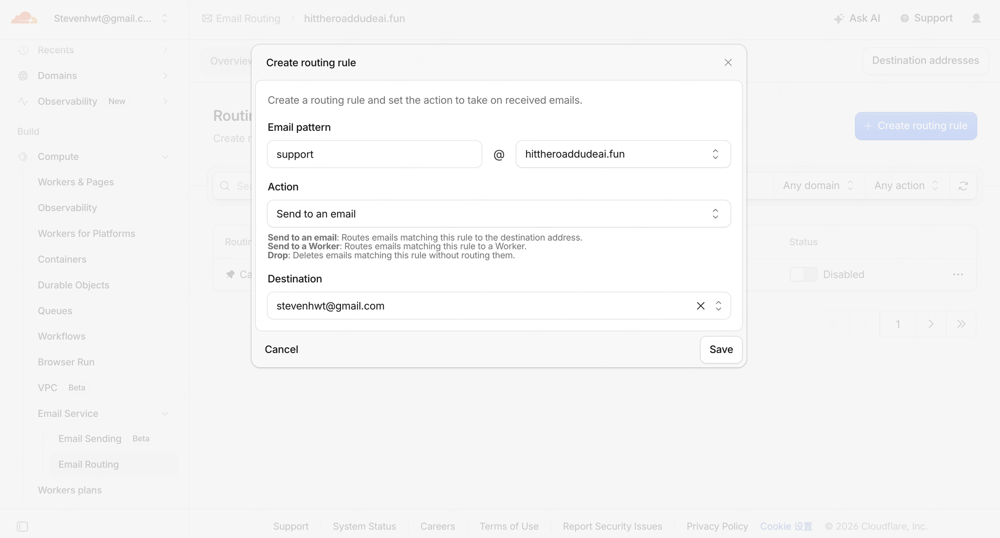
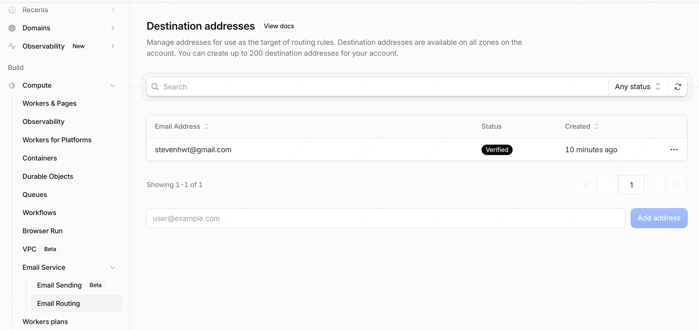
图注：切到「目标地址」添加个人 Gmail 并去邮箱点验证链接，确认状态变为绿色的 Verified。
1.4 创建 support@ 转发规则并保持 Catch-all 关闭
目标邮箱变成 Verified 后，切回 路由规则（Routing rules） 点击 + Create routing rule：在 Custom address 输入 support，Action 保持 Send to an email，Destination Address 选中 stevenhwt@gmail.com，点击 Save。
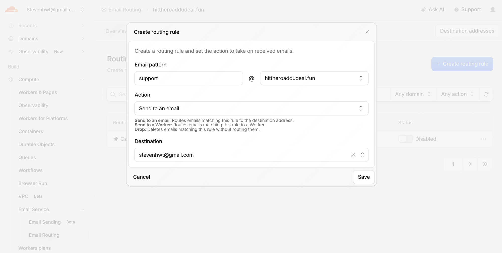
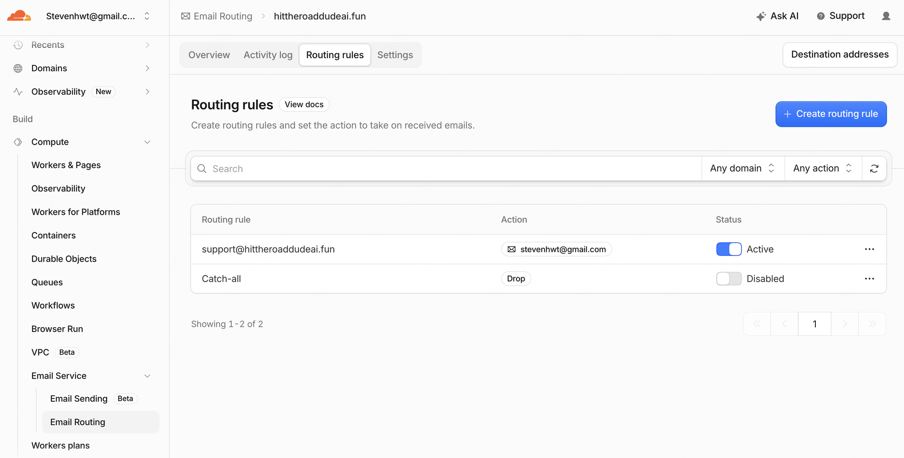
图注：保存后 support@hittheroaddudeai.fun 显示为绿色的 Active。列表下方的 Catch-all（全捕获兜底规则）保持默认的 Disabled 即可，不用开启，避免垃圾邮件扫号。
2. 第二阶段：配置 OpenAI 图片安全审核与 Waffo 沙盒测试支付
Waffo 对生成式 AI（AIGC）产品有严格的内容安全要求：上传图片或提示词必须在生成前经过合规扫描。站点代码已内置 MODERATION_PROVIDER = "openai"（调用免费的 omni-moderation-latest 接口），只需配好 OPENAI_API_KEY 即可生效。
2.1 创建永不过期的 OpenAI API Key 并写入环境变量
打开 platform.openai.com/api-keys 点击创建新密钥：名称填 <站点名>-moderation，有效期选择「永不过期」（避免线上运行几个月后密钥过期导致全站上传报错），权限保持 All。生成后将 OPENAI_API_KEY=sk-... 以及 Waffo 的 WAFFO_MERCHANT_ID、WAFFO_PRIVATE_KEY 一起写入项目的 .dev.vars 与 .dev.vars.production，并执行 node scripts/sync-secrets.mjs --apply 同步到 Cloudflare Worker。
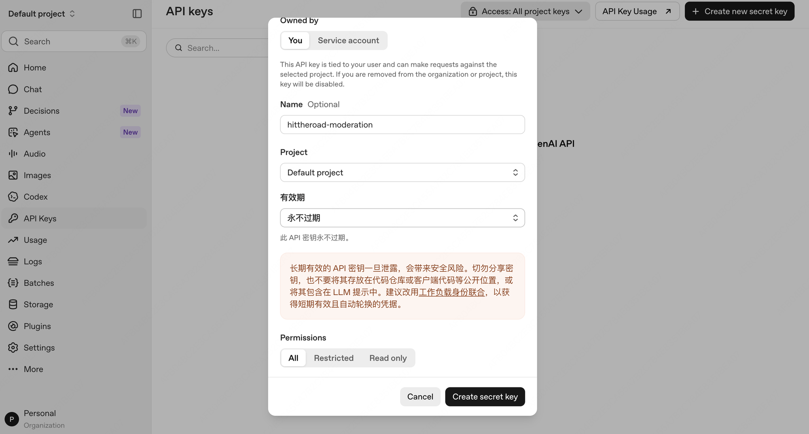
图注：在 OpenAI 后台创建内容审核专用 API Key，有效期务必选「永不过期」。
2.2 一键创建 Waffo 沙盒商品并用测试卡完成首笔支付
Waffo 新手引导要求在提交 KYB 前必须完成 4 项前置条件：① 创建第一个产品；② 设置 API 密钥；③ 设置 Webhook；④ 完成一笔测试支付。在项目根目录运行脚本即可自动建好沙盒商品（含一次性积分包与订阅套餐）、配好 Webhook，并自动写回 .dev.vars，再将输出的 WAFFO_PRODUCTS 与 WAFFO_STORE_ID 填入 wrangler.jsonc：
# 1. 自动读取 src/config/site.ts 里的积分包与订阅套餐，在 Waffo 测试环境创建商品并绑定 Webhook
node scripts/waffo-setup.mjs --store STO_你的店铺ID --apply --write-dev-vars --webhook https://你的域名/api/webhooks/waffo
# 2. 将输出的 WAFFO_PRODUCTS 与 WAFFO_STORE_ID 填入 wrangler.jsonc（PAYMENT_PROVIDER="waffo", MODERATION_PROVIDER="openai"）后部署上线
npm run build && npx wrangler deploy部署完成后，登录线上网站点击任意套餐进入 Waffo 测试收银台（第一页确认邮箱后点「继续」跳转至 checkout-sandbox.waffo.com），选择或手动填入官方成功测试卡号 4576 7500 0000 0110（有效期 12/30、CVV 123、持卡人 Wentao Hu），点击 支付。看到绿色「支付成功」后，务必点击收银台底部的「完成（Done）」按钮跳回你的网站，确认页面显示 Payment received 且右上角积分余额已实时增加，此时 Waffo 后台新手引导的「集成测试 2/2」才会点亮绿勾。
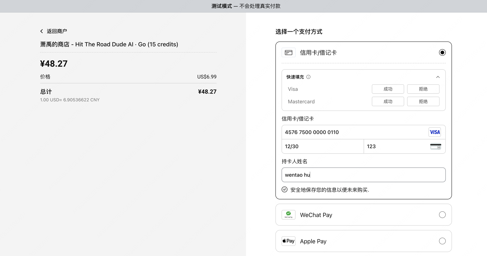
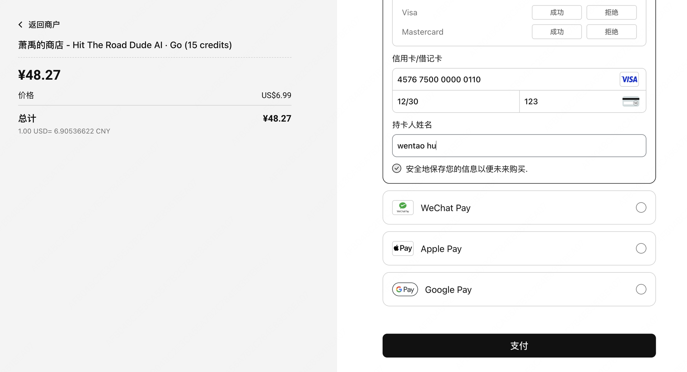
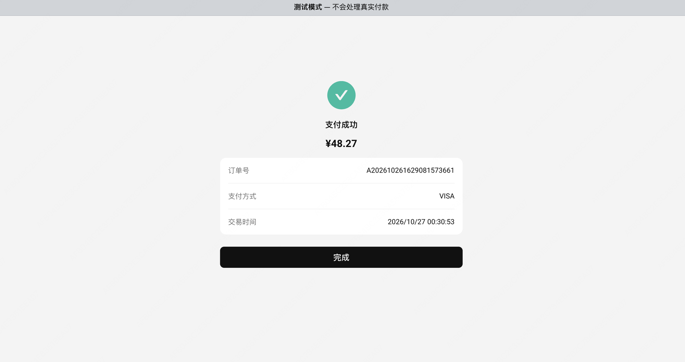
图注：使用 Waffo 官方测试卡完成首笔沙盒支付，看到绿色「支付成功」且站内积分自动到账，即点亮新手引导的「集成测试 2/2」。
3. 第三阶段：多网站「一网一店」架构与完善商店信息
多站点防关联核心原则（极其重要）： 当你手里有多个独立站（如 Hit The Road Dude AI、Glow Up AI 等）时，所有网站共用右上角同一个 Waffo 商户主账号（共用你的个人实名与同一张提款银行卡），但每个网站必须在左下角单独新建一个店铺（Store）！ 千万不要让两个不同域名的网站共用同一个 STO_xxx 店铺，否则收银台品牌名对不上，还会被支付风控判定为高风险 AB 站 / 套壳站。
| 层级 | 对应概念 | 多网站怎么配 |
|---|---|---|
| 顶层：商户账号（Merchant） | 右上角你的 Waffo 登录账号与收款主体 | 所有网站共用同一个账号，提款银行卡只需绑定一次 |
下层：店铺（Store，STO_xxx） | 左下角切换器里的具体店铺，对应单个独立站 | 一网一店：站点 A 用店铺 1，后续做站点 B 就点左下角 + 新建店铺 建店铺 2 |
3.1 修改店铺英文名称与上传方形 Logo（忽略中文店铺别名）
进入 Waffo 左侧菜单 设置 → 通用（后台地址：https://pancake.waffo.ai/；做第 2 个网站时也可直接访问 https://pancake.waffo.ai/merchant/dashboard/stores/new 新建店铺）。默认店铺名称可能是中文（如 萧禹的商店），面向欧美用户的收银台如果显示中文店名会严重降低信任感。点击 店铺名称 右侧的「编辑」将其改为与网站完全一致的英文品牌名（如 Hit The Road Dude AI 或 Glow Up AI），并上传一张 ≥200×200 的方形站点 Logo（注意：如果项目里 public/apple-touch-icon.png 默认是 180×180，先在终端用 sips -z 512 512 public/apple-touch-icon.png --out /tmp/logo-512.png 放大到 512×512 再上传）。
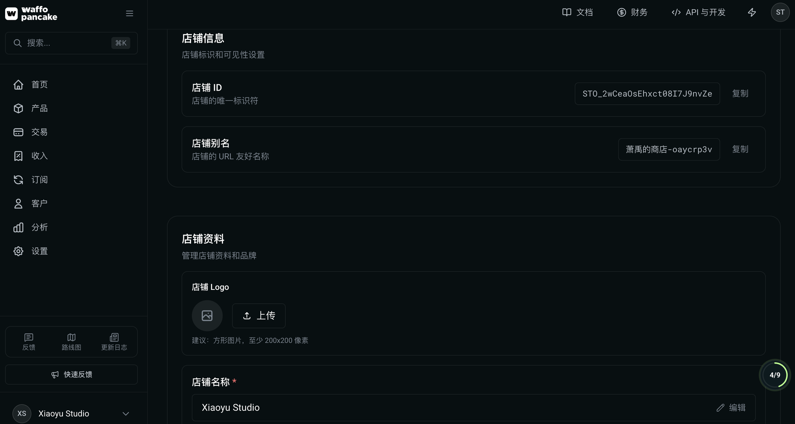
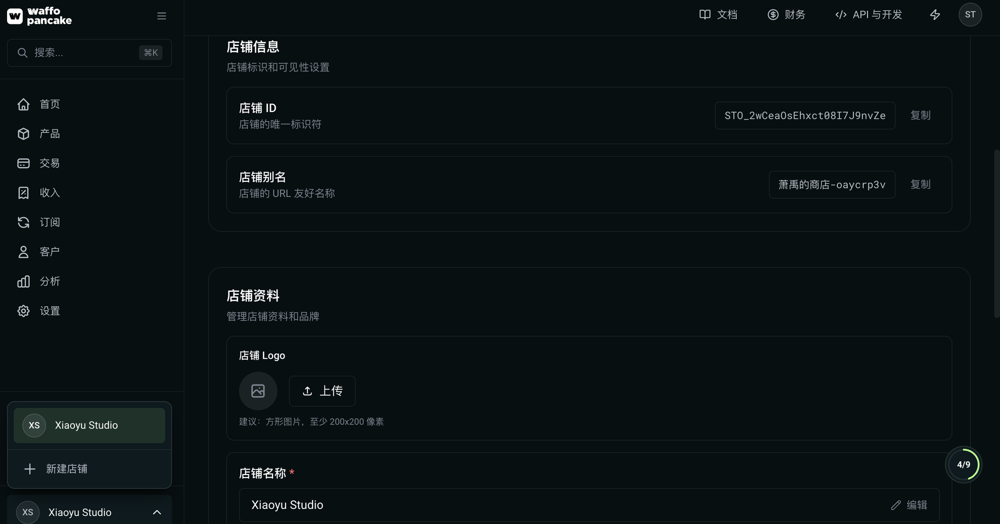
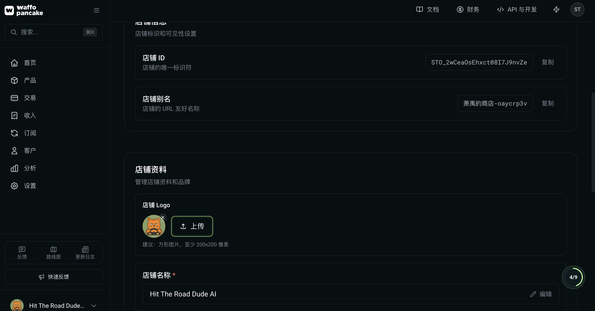
图注：在左下角可随时点击 + 新建店铺 扩展第 2、第 3 个网站；将当前店铺名称改为 Hit The Road Dude AI 并上传 Logo。注：上方的「店铺别名（如 萧禹的商店-oaycrp3v）」仅作后台内部 URL 标识，后续提交 KYB 后会自动同步为英文，包含中文完全不影响客户收银台展示，也不用重跑测试支付。
3.2 验证客服邮箱（support@域名）与自动验证网站域名
往下滚动到 客服邮箱 与 网站 区域（注意先后顺序，先验邮箱再验域名可免配 DNS）：① 先在客服邮箱填入刚刚在 Cloudflare 配好的 support@你的域名，点击 立即验证邮箱 / 发送验证码，去个人 Gmail 查收转发过来的 Your verification code: XXXXXX 邮件，把 6 位验证码填回验证；② 邮箱显示绿色「已验证」后，在下方网站填入 https://你的域名，点击 立即验证域名——因为客服邮箱的域名与网站域名完全一致，Waffo 会直接秒过域名所有权验证，完全不需要再去配 DNS TXT 记录！
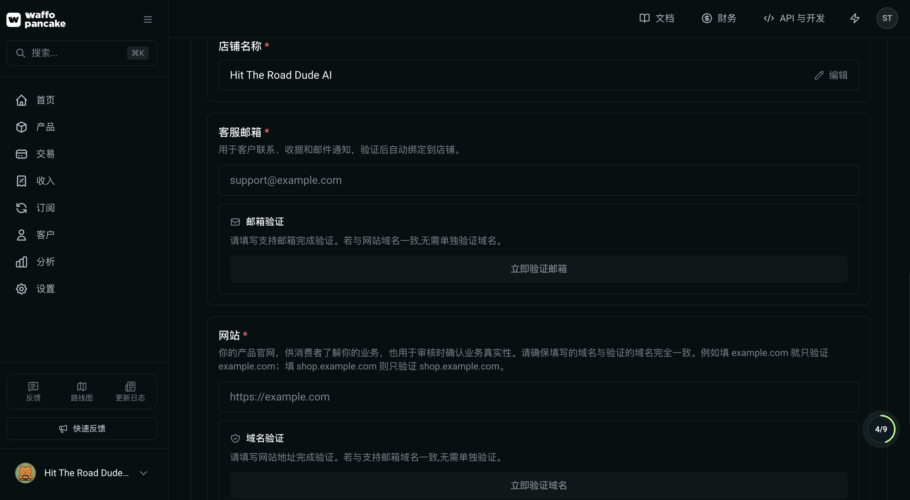
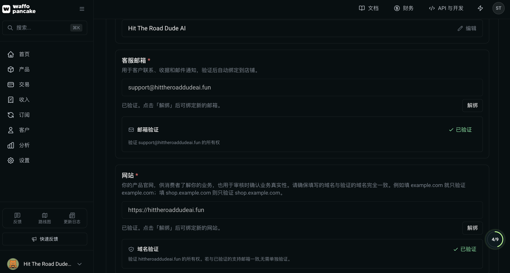
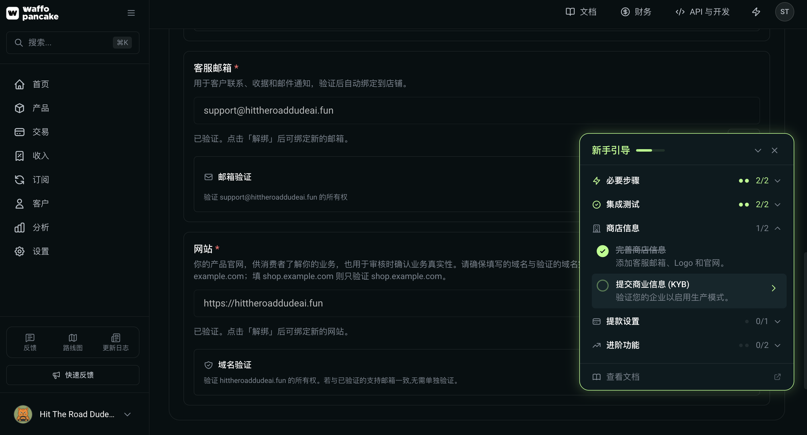
图注：验证完 support@ 邮箱后，同域名的网站所有权会自动通过验证；此时右下角新手引导「完善商店信息」亮起绿勾，点击 提交商业信息 (KYB) 进入 12 步审核向导。
4. 第四阶段：Waffo 12 步 KYB 商业信息审核逐项填写指南
点击 提交商业信息 (KYB) 后，共有 12 个步骤（1/12 至 12/12）。注意：有时点击入口会直接跳到第 3/12 步，如果漏掉了第 1/12 或 2/12 步，最后点提交时系统会黄字提示补填。下面严格按 第 1 步到第 12 步 的完整顺序整理：
4.1 第 1 12 步：业务类型（选「个人」）
独立开发者没有注册企业主体时，在下拉框直接选择 个人（自由职业者、创作者或个体经营者，没有注册的企业实体），点击右上角 下一步 >。
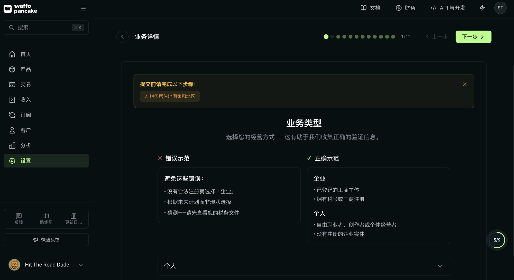
图注：第 1/12 步：业务类型选「个人」。若最初从第 3 步开始填，最后点提交时顶部会提示回到第 2 步补填税务居住地。
4.2 第 2 12 步：税务居住地国家和地区（选「中国」并勾选 3 项声明）
按你目前实际居住和申报个税的地方，下拉选择 中国，并将下方 3 个复选框（已查阅禁止产品文档、已查阅账户审核检查清单、理解被拒后一周内不重审）全部打勾，点击 下一步 >。
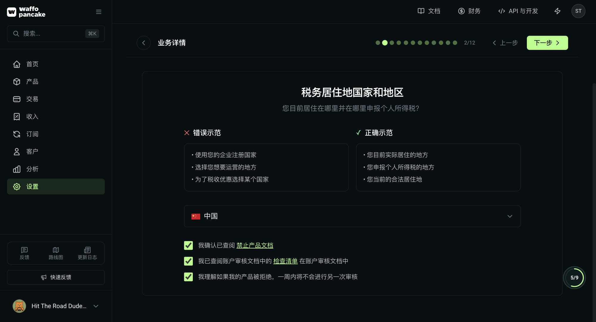
图注：第 2/12 步：税务居住地选「中国」，3 个合规确认框全部勾选。
4.3 第 3 12 步：产品就绪状态（选「已准备好投入生产」）
只要线上网站已经能打开、生成功能与沙盒支付已调通，务必选择第一项：是的，我的产品已准备好投入生产（如果选仍在测试/开发中，审核员可能会驳回让你等做好再来提交）。
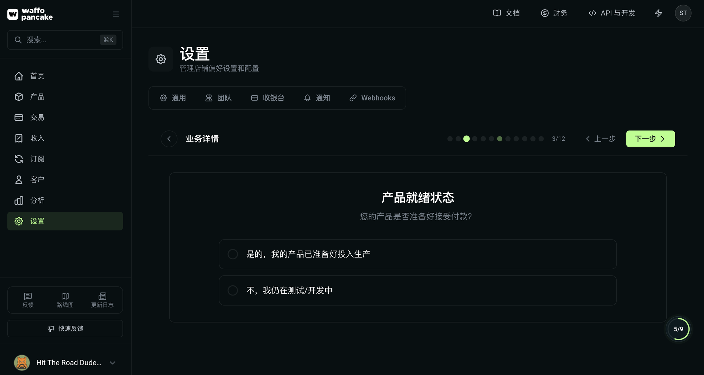
图注：第 3/12 步：选第一项「是的，我的产品已准备好投入生产」。
4.4 第 4 12 步：现有客户（选「没有，我刚刚起步」）
对于刚上线的新站，诚实选择第一项：没有，我刚刚起步（选第二项「已有现有客户」往往会被要求补充历史流水账单证明）。
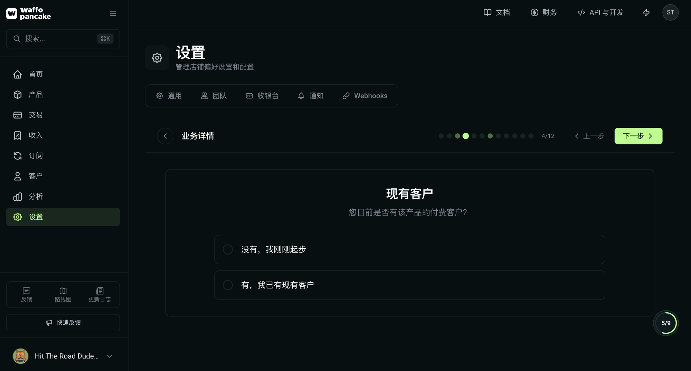
图注：第 4/12 步：新站直接选「没有，我刚刚起步」。
4.5 第 5 12 步：全名（避坑：必须填英文拼音，不能填汉字！）
高频踩坑提醒： 看到底部小字写着「此姓名将用于打款收款，需与您绑定的银行账户持有人完全一致」，很多人第一反应会像下图一样填中文汉字 胡文涛，或者纠结是不是必须按护照顺序填 HU WENTAO。实战已验证结论： ① 页面规则强制要求 「仅使用拉丁字母 (A-Z)」，绝对不能填中文汉字；② 填 Wentao Hu（官方正确示范的名在前、姓在后，中间带空格）完全没问题，已实测通过审核并成功绑定国内招商银行人民币储蓄卡（跨境结算网关会自动将拉丁拼音词元映射至后续「提款设置」里单独填写的中文汉字姓名「胡文涛」+ 18 位身份证号，因此 Wentao Hu 与 HU WENTAO 均不影响银行卡打款）。
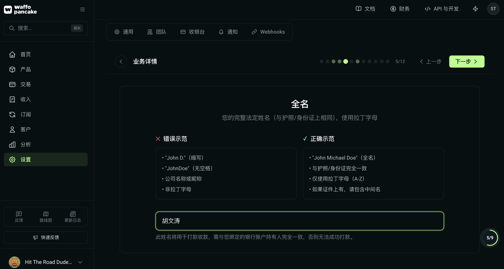
图注：第 5/12 步：切勿保留图中的中文汉字！必须按「仅使用拉丁字母 (A-Z)」要求改成英文拼音 Wentao Hu 再点下一步。
4.6 第 6 12 步：商家名称（填站点英文品牌名）
商家名称会显示在欧美客户的信用卡账单和邮件收据上。直接填与店铺名、网站抬头完全一致的英文品牌名（如 Hit The Road Dude AI），不要带 .fun 域名后缀，也不要带公司后缀。
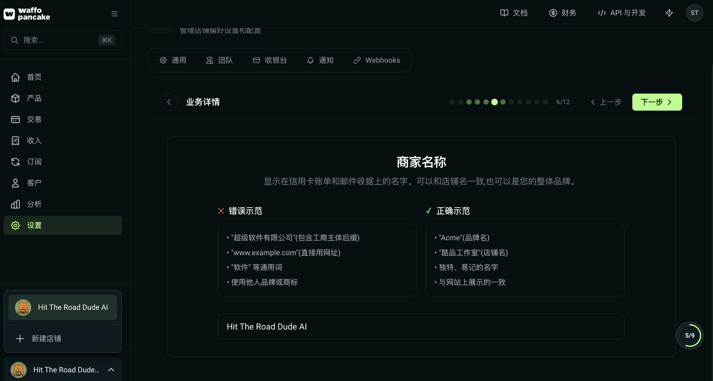
图注：第 6/12 步：填写英文品牌名 Hit The Road Dude AI。
4.7 第 7 12 步：联系邮箱（自动复用已验证的 support@ 邮箱）
因为前面在「通用设置」里已经验证过 support@hittheroaddudeai.fun，第 7 步会自动绑定并显示绿色的 ✓ 已验证，直接点击 下一步 > 即可。
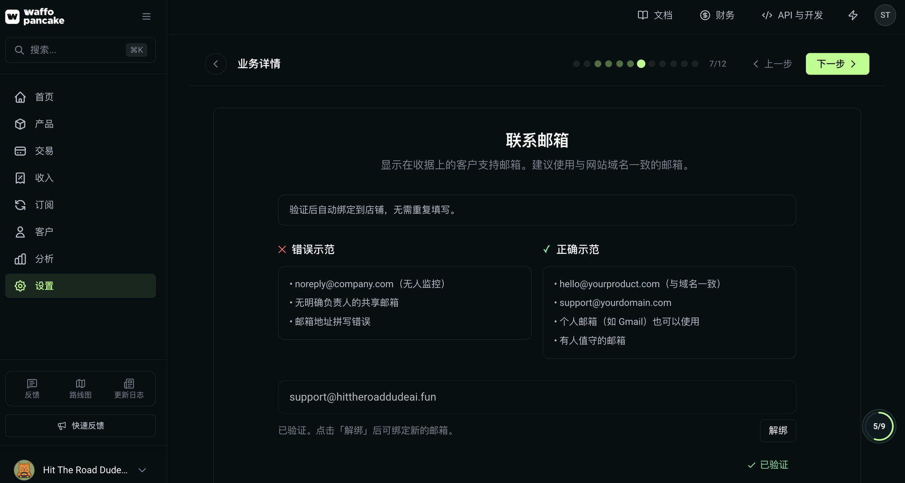
图注：第 7/12 步：联系邮箱自动读取已验证的 support@ 域名邮箱，直接点下一步。
4.8 第 8 12 步：服务条款 隐私政策 URL 与「网站自检」一次通过秘诀
第 8 步需要填写两个法律页面地址，并点击底部的 运行自检（BETA 网站自检）：
- 服务条款 URL：https://你的域名/terms-of-service
- 隐私政策 URL：https://你的域名/privacy-policy
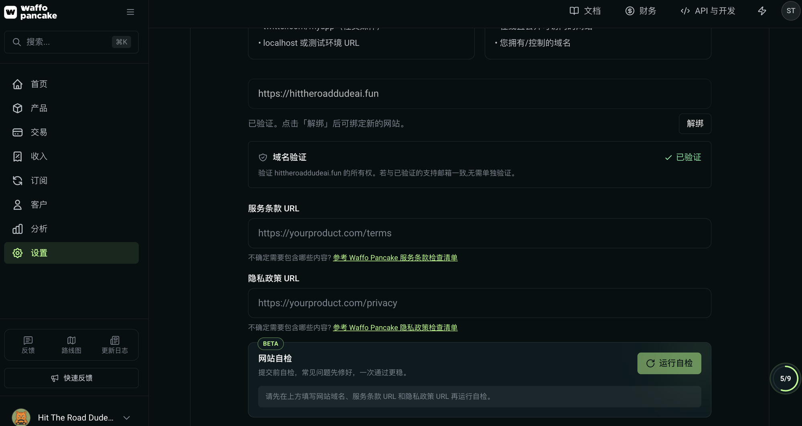
重点排雷（Waffo AI 爬虫自检规则）： 点击「运行自检」后，Waffo 的 AI 会实时抓取你的首页、/terms-of-service 和 /privacy-policy。对于照片生成 AI 视频这类 AIGC 网站，它严格对照官方《AUP 内容标准与禁止类别》（https://docs.waffo.ai/mor/account-reviews/aup#content-standards）逐项核对六大类禁止生成内容。如果条款里只写了 5 类、漏了「仇恨言论与歧视（Hate speech and discrimination）」，就会报下图中的黄字警告：
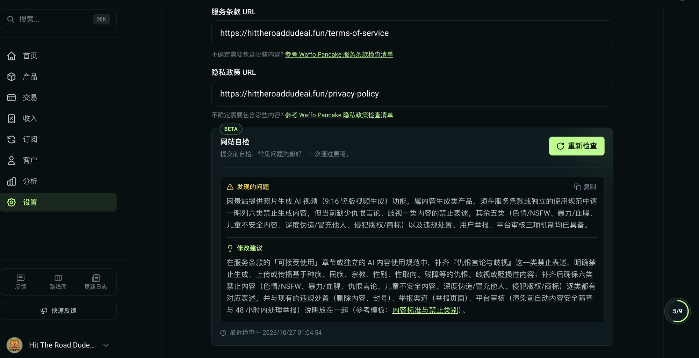
一劳永逸的修复标准： 确保站点 src/content/en.ts 与 zh.ts 的服务条款（Terms of Service）「Acceptable Use」章节完整包含以下 6 类禁令 + 3 项治理机制 + 底层模型披露：
1. NSFW / 成人色情（Pornography, nudity, or sexually explicit / NSFW content）
2. 暴力与血腥（Violence, gore, self-harm, or incitement to violence）
3. 仇恨言论与歧视（Hate speech, harassment, or discrimination based on race, ethnicity, nationality, religion, gender, gender identity, sexual orientation, disability, or other protected characteristics）
4. 未成年人保护（Minors or child-unsafe content / CSAM）
5. 深度伪造与未授权人像（Non-consensual likeness, deepfakes, or impersonation of real individuals）
6. 侵犯知识产权（Copyright, trademark, or IP infringement）
- 3 项治理机制：渲染前自动内容安全筛查（OpenAI omni-moderation-latest）、违规删除与封号、举报入口（/report）承诺 48 小时内响应处理。
- 底层 AI 模型透明披露：明确写出使用 OpenAI gpt-image-2 与 Kling v2.6 Motion Control。
补齐并 npm run deploy 后，再点一次 重新检查，即可看到绿色的 「✓ 未发现明显问题，你的网站看起来可以提交了。」
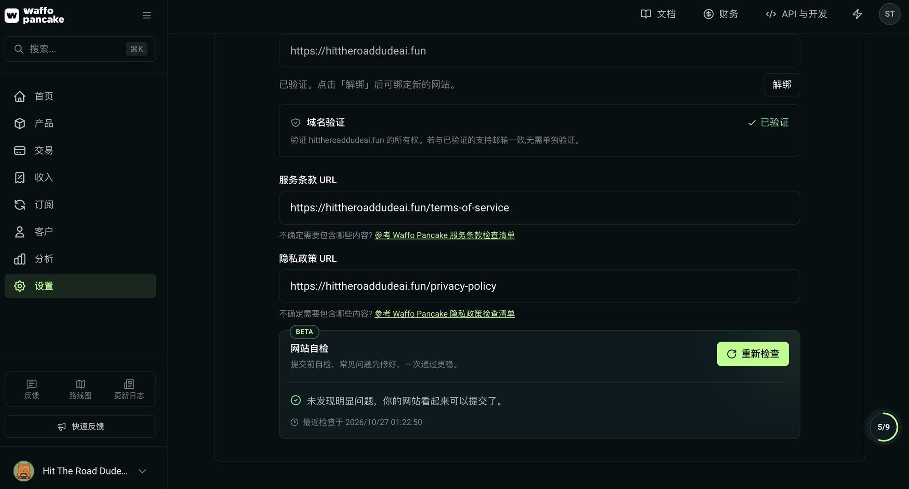
图注：补齐六类 AIGC 禁令与审核/举报机制后重新检查，显示绿字「未发现明显问题」即可点下一步。
4.9 第 9 12 步：关于您或您的业务（可直接复制的满分模板）
第 9 步要求覆盖 4 个得分点：专业背景和经验、GitHub/社交主页、为什么要构建这个产品、仅销售纯数字产品声明（中英文填写均可，推荐用结构化英文方便国际风控审核员秒看懂）。下次新站（无论是 AI 视频站还是 AI 图片变美站）只需把下面模板里的站名、域名和玩法改掉即可直接粘贴：
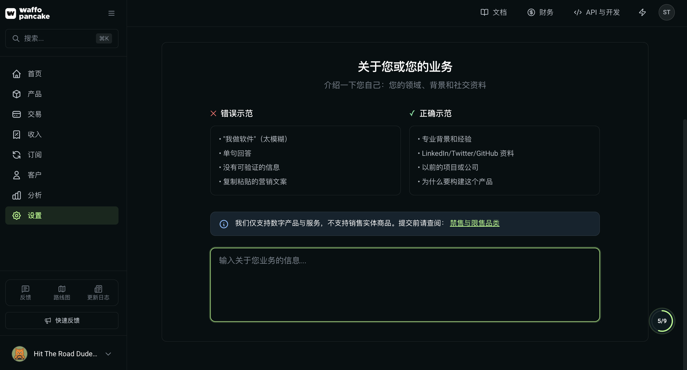
【通用英文版模板（图片站 / 视频站通用，替换站名与域名即可）】
1. Who I am & Portfolio:
I am Wentao Hu, an independent full-stack software developer specializing in consumer web applications and AI-powered creative tools. My GitHub profile is https://github.com/huwentao04 and our live product website is https://glowupai.tech .
2. Why I built this product:
I built Glow Up AI (glowupai.tech) to give everyday creators, social media users, and beauty enthusiasts an easy, fun, and affordable browser-based AI personal styling tool to preview realistic hairstyle, makeup, and outfit glow-up makeovers on their own selfie while strictly preserving their natural facial geometry and identity.
3. How it works & Tech Stack:
Our platform is built on Cloudflare Workers, React, TypeScript, Cloudflare D1, and R2 storage, powered by commercial AI generation APIs (fal.ai) and automated upload safety moderation (OpenAI omni-moderation-latest). We only sell digital prepaid credit packs and digital monthly/yearly credit subscriptions used directly on our web app—no physical goods and no adult/NSFW content.
----------------------------------------
【中文版示例（以 Hit The Road Dude AI 短视频站为例）】
我是全栈软件工程师与 AI 应用独立开发者（GitHub: https://github.com/huwentao04），长期从事 Web 全栈开发、多模态大模型应用与生成式 AI 工具工程化落地。
构建 Hit The Road Dude AI（https://hittheroaddudeai.fun）的原因：针对海外社交媒体流行的“Hit the Road, Dude”角色动画短视频趋势，普通创作者和宠物主人缺乏零门槛的制作工具。我基于 Cloudflare Workers 与两步 AI 管线（OpenAI gpt-image-2 场景合成 + Kling v2.6 Motion Control 角色动作迁移，配合 OpenAI omni-moderation-latest 内容安全审核）开发了这款在线 SaaS Web 应用，让用户上传一张宠物、卡通形象或授权人像照片即可在约 90 秒内生成 5 秒 720p 的动画短视频。
本项目仅销售纯数字积分包（一次性购买积分包或订阅套餐，按生成次数扣减，无实体商品）。4.10 第 10 12 步：产品和平台详情（含动态调价与促销报备声明）
第 10 步要求写清 功能描述、具体定价层级（需与线上 /pricing 页面展示的积分包及订阅套餐完全一致）、目标客户与用例。重要技巧： 上线后经常会做促销打折、跟随竞品降价或调整套餐规格。为了后续改价无需重新触发 KYB 审核，我们在第 2 段末尾专门加上一句 「在 $1.99–$99.00 USD 区间内动态调整价格与限时折扣」 的报备说明：
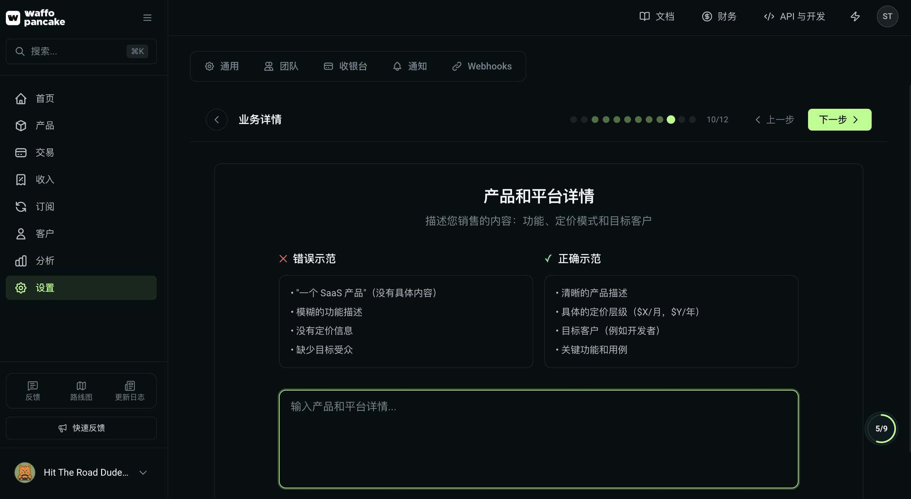
【通用英文版模板（同时包含一次性积分包 + 月付/年付订阅 + 动态调价声明）】
1. Features & Functionality:
Glow Up AI (https://glowupai.tech) is a browser-based AI personal styling and portrait makeover generator. Users sign in with Google OAuth, upload a portrait selfie (screened automatically by OpenAI omni-moderation-latest for safety compliance), choose from three styling directions—Natural (2 credits), Soft Glam (3 credits), or Golden Hour (3 credits)—and receive a high-resolution, watermark-free JPG portrait makeover in 10–40 seconds while keeping 100% of their original facial geometry. If any render fails, spent credits are automatically refunded to the user's account balance.
2. Pricing Model (One-Time Credit Packs, Subscriptions & Dynamic Pricing Flexibility):
We offer both one-time prepaid credit packs (purchased credits never expire) and optional monthly/yearly subscriptions (60 credits granted per month, expiring at the end of each month; cancel anytime in Billing):
- Starter Pack: $4.99 USD one-time (20 credits, ~6–10 glow-up portraits)
- Glow Pack: $9.99 USD one-time (60 credits, ~20–30 glow-up portraits)
- Studio Pack: $19.99 USD one-time (150 credits, ~50–75 glow-up portraits)
- Monthly Plan: $9.99 USD / month (60 credits per month)
- Yearly Plan: $99.00 USD / year (60 credits granted every month)
Note on Promotional & Future Pricing Adjustments: To adapt to market competition and seasonal campaigns, we may offer promotional discounts, introductory starter packs, or updated credit bundle tiers ranging between $1.99 USD and $99.00 USD. All prices and credit amounts are clearly displayed on the website before checkout.
3. Target Audience:
Everyday social media creators (TikTok, Instagram, LinkedIn, dating app profiles), beauty and fashion enthusiasts, and consumers in North America, Europe, and globally.
----------------------------------------
【中文版示例（仅积分包模式，以 Hit The Road Dude AI 为例）】
1. 产品描述与关键功能：
Hit The Road Dude AI（https://hittheroaddudeai.fun）是一款在线 AI 角色动画短视频生成 Web 应用。用户只需上传一张宠物、原创卡通角色或已获授权的成年人照片（支持 JPG/PNG/WebP），系统首先通过 OpenAI omni-moderation-latest 进行内容安全审核，随后使用 OpenAI gpt-image-2 生成 9:16 场景合成图，并通过 Kling v2.6 Motion Control 将动作、表情与原声迁移至角色身上，在约 90 秒内输出 720p 的 MP4 短视频（支持 10 秒、15 秒、30 秒三种时长档位），可直接下载发布至 TikTok、Instagram Reels 和 YouTube Shorts。生成失败系统会自动原路退还积分。
2. 定价模式与具体层级（一次性购买数字积分包，购买积分永不过期）：
按生成视频秒数计费（1 积分 = 1 秒视频，即 10 秒消耗 10 积分、15 秒消耗 15 积分、30 秒消耗 30 积分）。当前首发标准定价层级如下：
- Go 套餐：$6.99 USD（一次性付款），含 15 积分（可制作 1 条 15 秒标准短视频）
- Plus 套餐：$16.99 USD（一次性付款），含 45 积分（可制作 3 条 15 秒短视频或 1 条 30 秒 + 1 条 15 秒视频）
- Pro 套餐：$24.99 USD（一次性付款），含 75 积分（可制作 5 条 15 秒短视频）
（注：后续可能会根据市场竞争、节假日促销折扣或运营策略，在 $1.99–$49.99 USD 区间内动态调整积分包价格、推出限时折扣或新增不同积分规格的商品包。）
3. 目标客户与典型用例：
主要面向欧美地区的短视频创作者（TikTok / Reels / Shorts 博主）、宠物主人、插画师与动漫角色创作者，用于将自己的宠物或原创角色一键制作成热门的趣味短视频。4.11 第 11 12 步：产品合规性和透明度（3 项全勾）
将页面上的 3 个复选框（产品名称不侵犯任何现有商标、定价易于访问且清晰显示、产品不从事高风险或非法行为）全部勾选，点击 下一步 >。
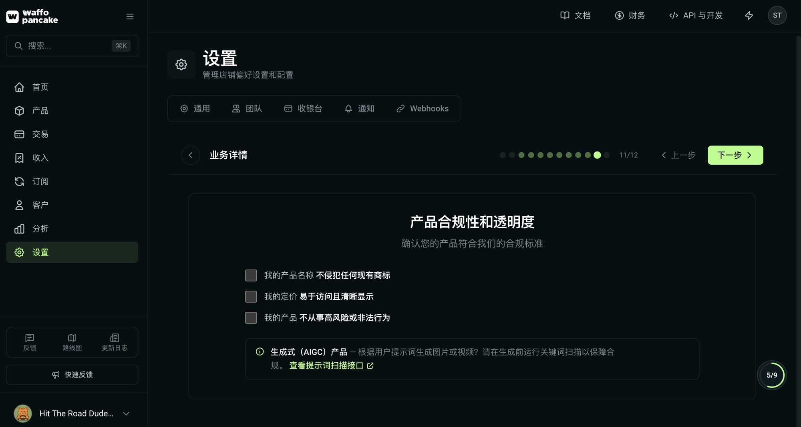
图注：第 11/12 步：3 个合规复选框全部勾选（底部 AIGC 扫描要求我们已在上传接口接入 OpenAI Moderation，无需点击）。
4.12 第 12 12 步：手续费与定价确认（3.9% + $0.50）并点击「提交」
最后一步展示 Waffo Pancake 的成功交易费率（每笔 3.9% + $0.50，无月费、无接入费）。勾选底部的 「我已阅读并同意 Waffo Pancake 的费率结构」。注意（人工把关红线）：由于一旦被拒审会有 7 天（1 周）冷却期无法重提，如果是让 AI Agent（waffo-kyb-onboarding Skill）帮你自动填表，Agent 会严格停在这一步并生成包含全部 18 张截图的桌面 HTML 验证报告，绝不会代你点提交；请你先对照验证报告检查第 1–12 步无误（若想修改某一步，点右上角 < 上一步 或顶部进度圆点即可无损退回修改），再亲手点击右上角绿色的 提交 按钮。
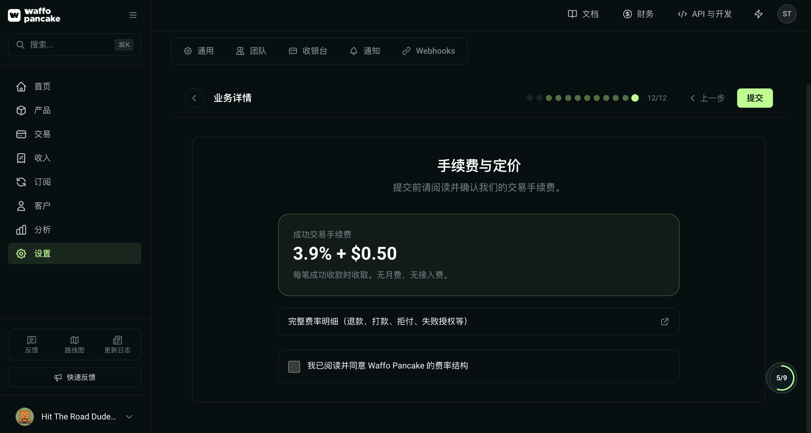
关于手续费与利润测算： 以 $6.99 的 Go 套餐为例，Waffo 扣掉 $6.99 × 3.9% + $0.50 ≈ $0.77 后净到手约 $6.22；调用一次 AI 生成视频成本约 $0.40–$0.50，毛利率仍在 80% 以上。而且审核通过后，随时可以改 src/config/site.ts 里的价格并跑 node scripts/waffo-setup.mjs --prod --apply 同步新商品，完全不需要重审。
5. 第五阶段：提交进入「审核中」与绑定人民币银行卡提款账户
点击提交后，页面立刻切换为 「审核中（您的业务信息已提交，目前正在审核中，1–3 个工作日）」。省心提示（多店铺自动共享提款卡）： 如果这是你同一个 Waffo 商户主账号下的第 2、第 3 个网站（如 Glow Up AI），因为第 1 个店铺已经绑过国内人民币银行卡，新店铺的 「提款设置 (1/1)」会自动直接亮绿灯，无需重复绑定！只有首次注册的第 1 个店铺，才需要按下面步骤顺手把 设置提款账户 办妥：
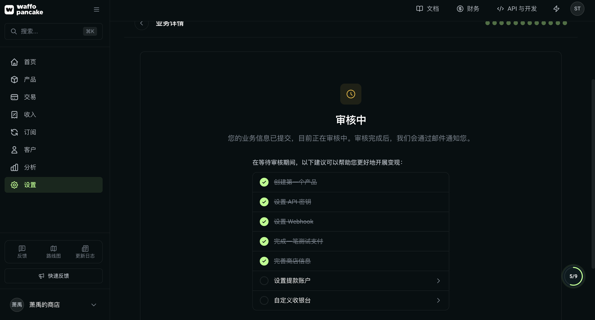
5.1 选择「中国 CNY 人民币 银行转账」（避开支付宝补材料坑）
点击「设置提款账户」后：
1. 个人实名信息弹窗：全部如实填中文信息（姓填中文姓、名填中文名、选中国身份证并填 18 位身份证号、填出生日期与手机号）。
2. 选择提款方式弹窗（如下图）：国家和地区选 中国 CHN，币种选 CNY 人民币，提款方式强烈推荐选 银行转账（页面底部黄字明确提示：支付宝渠道经常会触发补交申报材料导致提款失败或延迟，直接绑本人国内储蓄卡一劳永逸）。
3. 银行卡详情弹窗：银行名称选你的储蓄卡开户行（如招商银行），填入本人储蓄卡号并核对无误后点击保存。
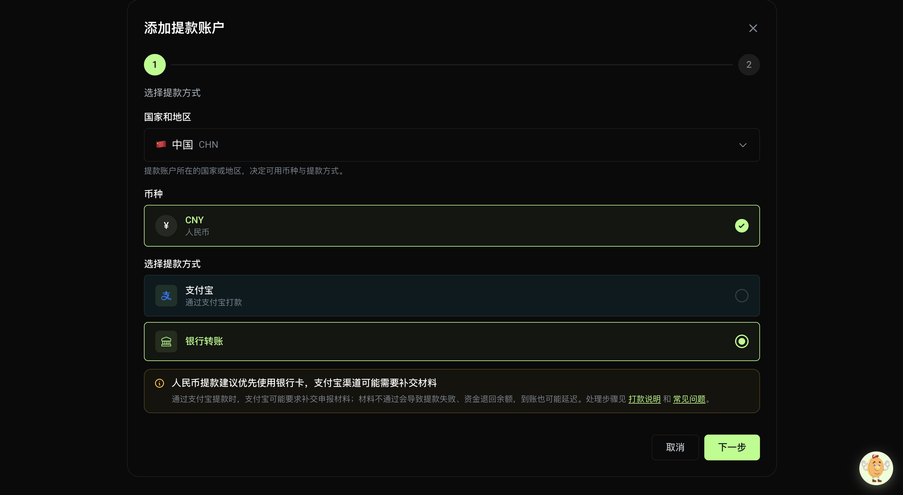
图注：提款方式优先选「银行转账（国内储蓄卡直达）」，避免支付宝渠道频繁要求补交申报材料。
5.2 最终完成状态：坐等审核通过后切入生产环境
绑好银行卡后，右下角新手引导里的 必要步骤 (2/2)、集成测试 (2/2)、完善商店信息、提款设置 (1/1) 全部亮起绿灯（自定义收银台 仅改背景色和展示样式，可做可不做，不影响任何收款功能）。
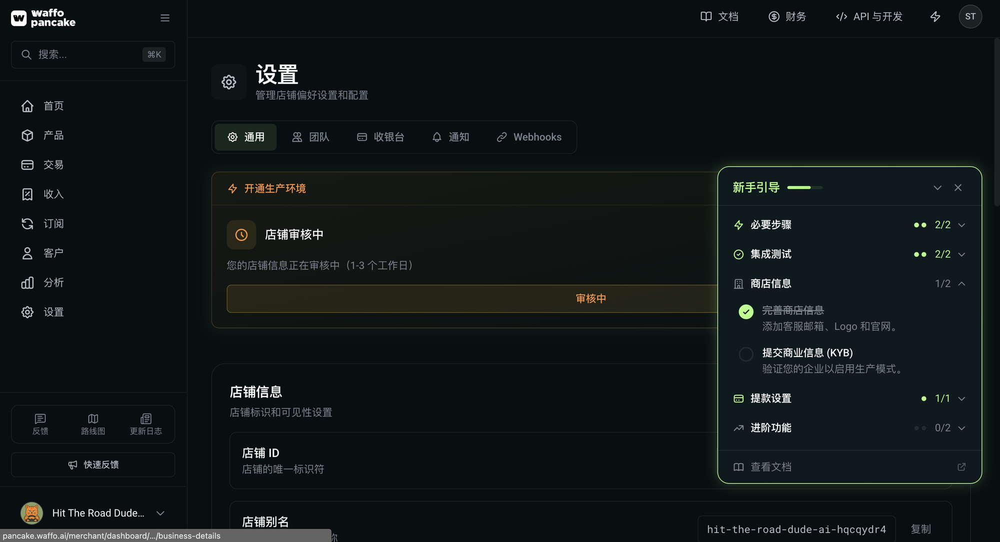
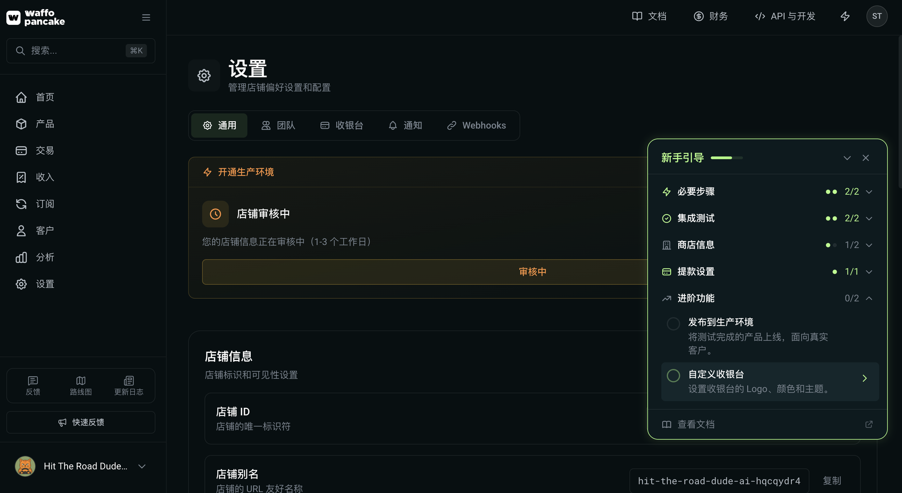
图注：所有配置与提款设置全部亮绿灯，只需等待 1–3 个工作日收到 Waffo 审核通过邮件。
6. 附录：收到「审核通过」邮件后的 3 分钟上线收尾命令
当你的 Gmail 收到 Waffo 审核通过通知后，只需要按顺序执行以下 3 步即可正式开张收美元：
# 1. 在 Waffo 后台（https://pancake.waffo.ai/）切换为「生产模式」，复制生产环境的 WAFFO_MERCHANT_ID 与 WAFFO_PRIVATE_KEY 填入 .dev.vars.production，然后同步到 Cloudflare Worker：
node scripts/sync-secrets.mjs --apply --overwrite
# 2. 一键在 Waffo 生产环境创建正式商品（含积分包与订阅套餐）并绑定生产 Webhook：
node scripts/waffo-setup.mjs --prod --store STO_你的店铺ID --apply --write-dev-vars --webhook https://你的域名/api/webhooks/waffo
# 3. 将输出的 WAFFO_PRODUCTS 更新到 wrangler.jsonc，并将 WAFFO_ENVIRONMENT 改为 "production"，然后构建发布上线：
npm run build && npx wrangler deploy